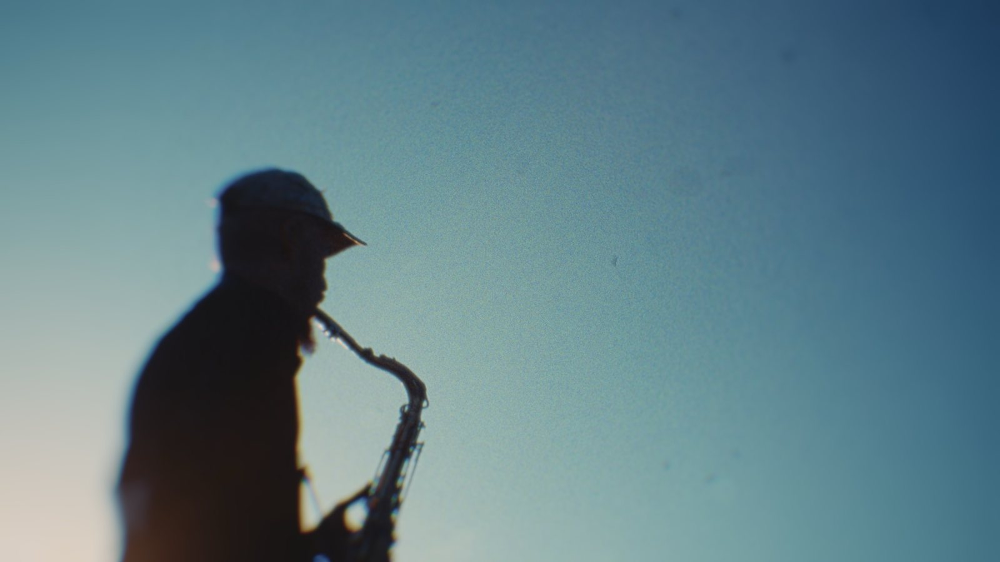
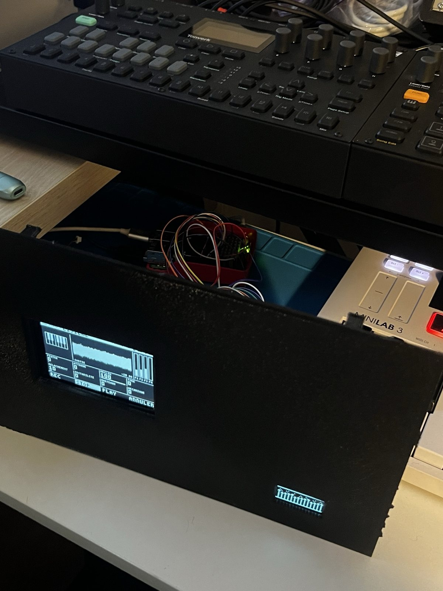
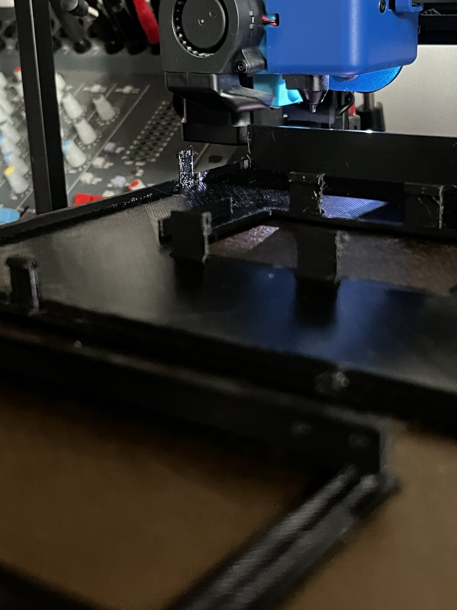

rose.null

bio
Je suis Louis Rose, alias rose_null : multi-instrumentiste, saxophoniste et producteur. Je passe mon temps à expérimenter le son, dans les pédales d'effets, la synthèse modulaire et les lignes de code, en Pure Data et en Python.
rose.null_music.system en est le résultat : un synthé intime, construit pour ma façon de travailler, nourri des musiciens et des fabricants d'instruments que j'aime. Le mieux est de l'écouter, ou de le regarder.



